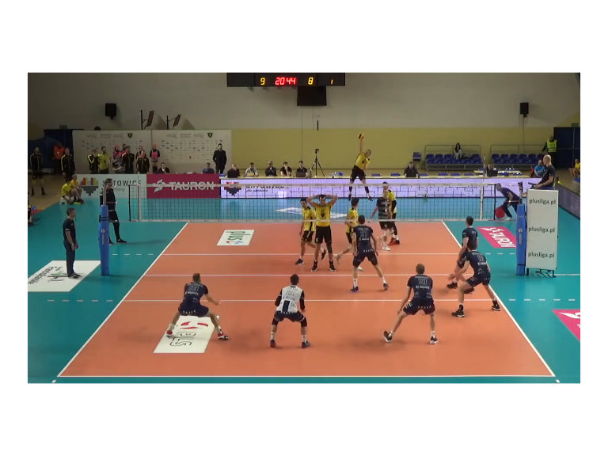
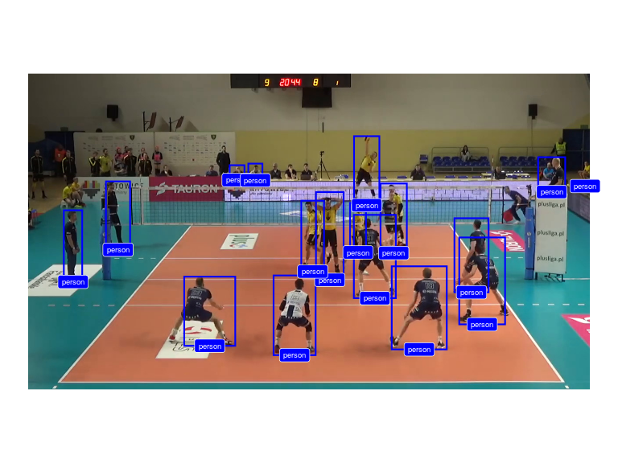
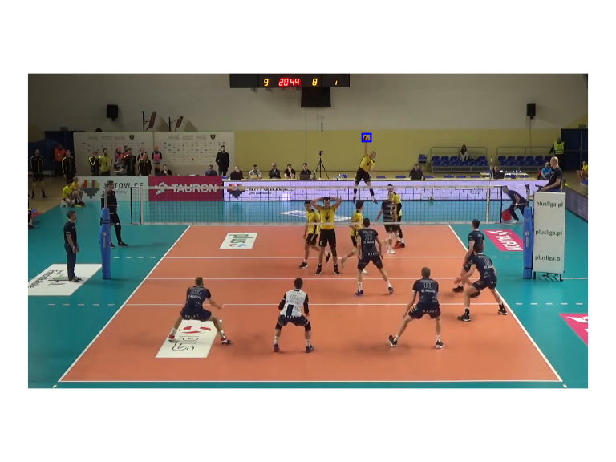

Installation
## install.packages("remotes")
remotes::install_github("openvolley/ovml")The ovml package provides image and video machine learning tools for volleyball analytics.
Currently two versions of the YOLO object detection algorithm are included. These have been implemented on top of the torch R package, meaning that no Python installation is required on your system.
The package also includes an experimental network specifically for detecting volleyballs.
Example
Use a YOLOv4 network to recognize objects in an image. We use a video frame image (bundled with the package):
library(ovml)
img <- ovml_example_image()
ovml_ggplot(img)
Construct the network. The first time this function is run, it will download and cache the network weights file (~250MB).
dn <- ovml_yolo()Now we can use the network to detect objects in our image:
res <- ovml_yolo_detect(dn, img, conf = 0.3)
res <- res[res$class %in% c("person", "sports ball"), ]
ovml_ggplot(img, res)
Note that this network didn’t detect the volleyball (in the process of being contacted by the server). Let’s try the experimental volleyball-specific network:
dn <- ovml_yolo("4-mvb")
res <- ovml_yolo_detect(dn, img)
ovml_ggplot(img, res, label_geom = NULL) ## don't add the label, it obscures the volleyball